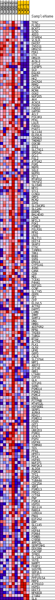

| | | Dataset | 306_WT_express.306_WT.cls#306_versus_WT |
| Phenotype | 306_WT.cls#306_versus_WT |
| Upregulated in class | 306 |
| GeneSet | HALLMARK_MTORC1_SIGNALING |
| Enrichment Score (ES) | 0.46193343 |
| Normalized Enrichment Score (NES) | 1.2918853 |
| Nominal p-value | 0.011111111 |
| FDR q-value | 0.2268206 |
| FWER p-Value | 0.787 |
Table: GSEA Results Summary
 Fig 1: Enrichment plot: HALLMARK_MTORC1_SIGNALING
Fig 1: Enrichment plot: HALLMARK_MTORC1_SIGNALING
Profile of the Running ES Score & Positions of GeneSet Members on the Rank Ordered List
| SYMBOL | TITLE | RANK IN GENE LIST | RANK METRIC SCORE | RUNNING ES | CORE ENRICHMENT | | 1 | TFRC | NNN | 1102 | 0.747 | 0.0000 | Yes |
| 2 | PLOD2 | NNN | 2026 | 0.646 | 0.0006 | Yes |
| 3 | BCAT1 | NNN | 2226 | 0.622 | 0.0129 | Yes |
| 4 | SC5D | NNN | 2464 | 0.603 | 0.0241 | Yes |
| 5 | ADD3 | NNN | 3123 | 0.548 | 0.0266 | Yes |
| 6 | STARD4 | NNN | 3421 | 0.536 | 0.0351 | Yes |
| 7 | VLDLR | NNN | 3480 | 0.532 | 0.0475 | Yes |
| 8 | DHCR7 | NNN | 3769 | 0.512 | 0.0555 | Yes |
| 9 | INSIG1 | NNN | 3899 | 0.503 | 0.0660 | Yes |
| 10 | HMGCS1 | NNN | 4754 | 0.474 | 0.0633 | Yes |
| 11 | PDK1 | NNN | 4969 | 0.469 | 0.0715 | Yes |
| 12 | CTH | NNN | 5587 | 0.460 | 0.0726 | Yes |
| 13 | HMGCR | NNN | 5639 | 0.457 | 0.0832 | Yes |
| 14 | ACSL3 | NNN | 5659 | 0.456 | 0.0944 | Yes |
| 15 | SYTL2 | NNN | 5871 | 0.446 | 0.1020 | Yes |
| 16 | IGFBP5 | NNN | 6062 | 0.436 | 0.1098 | Yes |
| 17 | SCD | NNN | 6542 | 0.416 | 0.1121 | Yes |
| 18 | EGLN3 | NNN | 6589 | 0.414 | 0.1218 | Yes |
| 19 | DHFR | NNN | 6755 | 0.408 | 0.1292 | Yes |
| 20 | HK2 | NNN | 7267 | 0.387 | 0.1303 | Yes |
| 21 | DHCR24 | NNN | 7662 | 0.372 | 0.1329 | Yes |
| 22 | RRM2 | NNN | 7854 | 0.366 | 0.1389 | Yes |
| 23 | CXCR4 | NNN | 7889 | 0.366 | 0.1475 | Yes |
| 24 | MCM4 | NNN | 8141 | 0.360 | 0.1523 | Yes |
| 25 | GGA2 | NNN | 8380 | 0.352 | 0.1571 | Yes |
| 26 | NUP205 | NNN | 8404 | 0.351 | 0.1656 | Yes |
| 27 | AK4 | NNN | 8707 | 0.349 | 0.1693 | Yes |
| 28 | ACACA | NNN | 8763 | 0.348 | 0.1771 | Yes |
| 29 | PHGDH | NNN | 8858 | 0.345 | 0.1842 | Yes |
| 30 | FADS2 | NNN | 8971 | 0.341 | 0.1909 | Yes |
| 31 | GAPDH | NNN | 9169 | 0.334 | 0.1959 | Yes |
| 32 | ACLY | NNN | 9209 | 0.333 | 0.2037 | Yes |
| 33 | PIK3R3 | NNN | 9357 | 0.329 | 0.2094 | Yes |
| 34 | PFKL | NNN | 9358 | 0.329 | 0.2177 | Yes |
| 35 | LDLR | NNN | 9384 | 0.328 | 0.2256 | Yes |
| 36 | FADS1 | NNN | 10316 | 0.319 | 0.2177 | Yes |
| 37 | PSAT1 | NNN | 11023 | 0.302 | 0.2133 | Yes |
| 38 | SLC1A4 | NNN | 11423 | 0.291 | 0.2138 | Yes |
| 39 | ELOVL6 | NNN | 11477 | 0.289 | 0.2202 | Yes |
| 40 | CDKN1A | NNN | 11500 | 0.288 | 0.2271 | Yes |
| 41 | TMEM97 | NNN | 11645 | 0.285 | 0.2318 | Yes |
| 42 | GSK3B | NNN | 11732 | 0.282 | 0.2375 | Yes |
| 43 | IDI1 | NNN | 11820 | 0.280 | 0.2430 | Yes |
| 44 | SLC7A11 | NNN | 11878 | 0.278 | 0.2491 | Yes |
| 45 | SRD5A1 | NNN | 11991 | 0.276 | 0.2541 | Yes |
| 46 | GCLC | NNN | 13945 | 0.274 | 0.2277 | Yes |
| 47 | FGL2 | NNN | 14284 | 0.266 | 0.2287 | Yes |
| 48 | ATP2A2 | NNN | 14514 | 0.261 | 0.2314 | Yes |
| 49 | PGM1 | NNN | 14578 | 0.259 | 0.2368 | Yes |
| 50 | M6PR | NNN | 14580 | 0.259 | 0.2433 | Yes |
| 51 | SQLE | NNN | 14633 | 0.257 | 0.2489 | Yes |
| 52 | NUPR1 | NNN | 14701 | 0.256 | 0.2542 | Yes |
| 53 | RIT1 | NNN | 14805 | 0.253 | 0.2589 | Yes |
| 54 | MTHFD2 | NNN | 15021 | 0.249 | 0.2615 | Yes |
| 55 | TM7SF2 | NNN | 15072 | 0.247 | 0.2668 | Yes |
| 56 | SLC6A6 | NNN | 15424 | 0.239 | 0.2669 | Yes |
| 57 | NFYC | NNN | 15514 | 0.239 | 0.2714 | Yes |
| 58 | STC1 | NNN | 15616 | 0.236 | 0.2756 | Yes |
| 59 | CCNG1 | NNN | 15849 | 0.230 | 0.2774 | Yes |
| 60 | GMPS | NNN | 15876 | 0.230 | 0.2828 | Yes |
| 61 | MCM2 | NNN | 15910 | 0.228 | 0.2880 | Yes |
| 62 | IDH1 | NNN | 15956 | 0.227 | 0.2929 | Yes |
| 63 | SLC9A3R1 | NNN | 16004 | 0.226 | 0.2978 | Yes |
| 64 | SLC2A1 | NNN | 16017 | 0.226 | 0.3033 | Yes |
| 65 | EDEM1 | NNN | 16100 | 0.224 | 0.3076 | Yes |
| 66 | BHLHE40 | NNN | 16138 | 0.223 | 0.3126 | Yes |
| 67 | LDHA | NNN | 16183 | 0.222 | 0.3174 | Yes |
| 68 | NFIL3 | NNN | 16205 | 0.221 | 0.3226 | Yes |
| 69 | PGK1 | NNN | 16374 | 0.217 | 0.3252 | Yes |
| 70 | PSME3 | NNN | 16419 | 0.216 | 0.3299 | Yes |
| 71 | POLR3G | NNN | 16564 | 0.213 | 0.3329 | Yes |
| 72 | RPA1 | NNN | 16599 | 0.212 | 0.3376 | Yes |
| 73 | USO1 | NNN | 16763 | 0.208 | 0.3401 | Yes |
| 74 | MLLT11 | NNN | 16860 | 0.206 | 0.3436 | Yes |
| 75 | DDIT4 | NNN | 16931 | 0.204 | 0.3476 | Yes |
| 76 | SKAP2 | NNN | 16936 | 0.204 | 0.3526 | Yes |
| 77 | CTSC | NNN | 16968 | 0.203 | 0.3572 | Yes |
| 78 | TXNRD1 | NNN | 17078 | 0.200 | 0.3604 | Yes |
| 79 | TBK1 | NNN | 17103 | 0.199 | 0.3650 | Yes |
| 80 | BUB1 | NNN | 17379 | 0.194 | 0.3652 | Yes |
| 81 | SSR1 | NNN | 17454 | 0.191 | 0.3688 | Yes |
| 82 | ERO1A | NNN | 17979 | 0.184 | 0.3645 | Yes |
| 83 | CYP51A1 | NNN | 18344 | 0.175 | 0.3627 | Yes |
| 84 | ASNS | NNN | 18368 | 0.174 | 0.3666 | Yes |
| 85 | CANX | NNN | 18453 | 0.172 | 0.3695 | Yes |
| 86 | CD9 | NNN | 18517 | 0.170 | 0.3728 | Yes |
| 87 | ME1 | NNN | 18537 | 0.170 | 0.3767 | Yes |
| 88 | TCEA1 | NNN | 18575 | 0.169 | 0.3803 | Yes |
| 89 | P4HA1 | NNN | 18752 | 0.165 | 0.3815 | Yes |
| 90 | EEF1E1 | NNN | 18787 | 0.164 | 0.3850 | Yes |
| 91 | CCNF | NNN | 18886 | 0.162 | 0.3874 | Yes |
| 92 | SLC7A5 | NNN | 18931 | 0.161 | 0.3907 | Yes |
| 93 | QDPR | NNN | 18939 | 0.160 | 0.3947 | Yes |
| 94 | GPI | NNN | 18975 | 0.159 | 0.3981 | Yes |
| 95 | CFP | NNN | 18980 | 0.159 | 0.4020 | Yes |
| 96 | ELOVL5 | NNN | 19104 | 0.157 | 0.4039 | Yes |
| 97 | ACTR2 | NNN | 19183 | 0.155 | 0.4065 | Yes |
| 98 | DAPP1 | NNN | 19265 | 0.153 | 0.4089 | Yes |
| 99 | LGMN | NNN | 19330 | 0.152 | 0.4117 | Yes |
| 100 | IMMT | NNN | 19370 | 0.151 | 0.4148 | Yes |
| 101 | SHMT2 | NNN | 19434 | 0.150 | 0.4175 | Yes |
| 102 | UNG | NNN | 19538 | 0.147 | 0.4195 | Yes |
| 103 | HMBS | NNN | 19561 | 0.146 | 0.4228 | Yes |
| 104 | ADIPOR2 | NNN | 19744 | 0.143 | 0.4233 | Yes |
| 105 | RPN1 | NNN | 19804 | 0.142 | 0.4259 | Yes |
| 106 | TRIB3 | NNN | 19925 | 0.139 | 0.4273 | Yes |
| 107 | TUBG1 | NNN | 19998 | 0.137 | 0.4296 | Yes |
| 108 | BTG2 | NNN | 20008 | 0.137 | 0.4329 | Yes |
| 109 | ACTR3 | NNN | 20064 | 0.136 | 0.4353 | Yes |
| 110 | PLK1 | NNN | 20226 | 0.131 | 0.4359 | Yes |
| 111 | GLRX | NNN | 20268 | 0.130 | 0.4385 | Yes |
| 112 | UFM1 | NNN | 20328 | 0.128 | 0.4407 | Yes |
| 113 | G6PD | NNN | 20375 | 0.128 | 0.4431 | Yes |
| 114 | CALR | NNN | 20408 | 0.127 | 0.4458 | Yes |
| 115 | SLC37A4 | NNN | 20456 | 0.126 | 0.4482 | Yes |
| 116 | NMT1 | NNN | 20463 | 0.126 | 0.4512 | Yes |
| 117 | ABCF2 | NNN | 20486 | 0.125 | 0.4540 | Yes |
| 118 | IFI30 | NNN | 20864 | 0.116 | 0.4505 | Yes |
| 119 | GBE1 | NNN | 20886 | 0.115 | 0.4531 | Yes |
| 120 | LTA4H | NNN | 20952 | 0.114 | 0.4548 | Yes |
| 121 | COPS5 | NNN | 21166 | 0.109 | 0.4539 | Yes |
| 122 | GLA | NNN | 21294 | 0.106 | 0.4544 | Yes |
| 123 | GTF2H1 | NNN | 21413 | 0.103 | 0.4550 | Yes |
| 124 | SORD | NNN | 21585 | 0.099 | 0.4546 | Yes |
| 125 | PSMD14 | NNN | 21602 | 0.098 | 0.4568 | Yes |
| 126 | PSMA3 | NNN | 21632 | 0.097 | 0.4588 | Yes |
| 127 | PSMC2 | NNN | 21645 | 0.097 | 0.4610 | Yes |
| 128 | ENO1 | NNN | 21839 | 0.093 | 0.4600 | Yes |
| 129 | PITPNB | NNN | 21865 | 0.092 | 0.4619 | Yes |
| 130 | MTHFD2L | NNN | 22208 | 0.084 | 0.4582 | No |
| 131 | HSP90B1 | NNN | 22510 | 0.081 | 0.4551 | No |
| 132 | SERP1 | NNN | 22586 | 0.079 | 0.4558 | No |
| 133 | AURKA | NNN | 22595 | 0.079 | 0.4577 | No |
| 134 | RDH11 | NNN | 22708 | 0.077 | 0.4577 | No |
| 135 | PSMD12 | NNN | 22844 | 0.074 | 0.4573 | No |
| 136 | FDXR | NNN | 22904 | 0.072 | 0.4581 | No |
| 137 | GOT1 | NNN | 22974 | 0.071 | 0.4587 | No |
| 138 | ETF1 | NNN | 23045 | 0.069 | 0.4592 | No |
| 139 | UBE2D3 | NNN | 23209 | 0.064 | 0.4581 | No |
| 140 | PSMG1 | NNN | 23510 | 0.062 | 0.4545 | No |
| 141 | UCHL5 | NNN | 23547 | 0.061 | 0.4554 | No |
| 142 | PSPH | NNN | 23673 | 0.057 | 0.4547 | No |
| 143 | HSPA9 | NNN | 23686 | 0.056 | 0.4559 | No |
| 144 | TOMM40 | NNN | 23910 | 0.050 | 0.4534 | No |
| 145 | TES | NNN | 24244 | 0.041 | 0.4487 | No |
| 146 | PPA1 | NNN | 24315 | 0.039 | 0.4485 | No |
| 147 | HPRT1 | NNN | 24443 | 0.035 | 0.4473 | No |
| 148 | PPIA | NNN | 24828 | 0.026 | 0.4414 | No |
| 149 | HSPA5 | NNN | 24927 | 0.023 | 0.4403 | No |
| 150 | NUFIP1 | NNN | 24936 | 0.022 | 0.4407 | No |
| 151 | MAP2K3 | NNN | 24946 | 0.022 | 0.4411 | No |
| 152 | ALDOA | NNN | 24984 | 0.021 | 0.4410 | No |
| 153 | PSMC6 | NNN | 25211 | 0.013 | 0.4374 | No |
| 154 | TPI1 | NNN | 25247 | 0.012 | 0.4371 | No |
| 155 | PDAP1 | NNN | 25332 | 0.009 | 0.4359 | No |
| 156 | TUBA4A | NNN | 25384 | 0.006 | 0.4352 | No |
| 157 | CDC25A | NNN | 25491 | 0.001 | 0.4334 | No |
| 158 | XBP1 | NNN | 46913 | -0.016 | 0.0685 | No |
| 159 | PSMD13 | NNN | 47331 | -0.030 | 0.0622 | No |
| 160 | PRDX1 | NNN | 47372 | -0.031 | 0.0623 | No |
| 161 | CCT6A | NNN | 47417 | -0.033 | 0.0623 | No |
| 162 | PNP | NNN | 47565 | -0.037 | 0.0608 | No |
| 163 | PSMC4 | NNN | 47673 | -0.041 | 0.0600 | No |
| 164 | HSPD1 | NNN | 47733 | -0.043 | 0.0601 | No |
| 165 | SEC11A | NNN | 47745 | -0.043 | 0.0610 | No |
| 166 | RAB1A | NNN | 47776 | -0.045 | 0.0616 | No |
| 167 | CORO1A | NNN | 47999 | -0.052 | 0.0591 | No |
| 168 | PNO1 | NNN | 48185 | -0.060 | 0.0574 | No |
| 169 | EIF2S2 | NNN | 48195 | -0.060 | 0.0588 | No |
| 170 | EBP | NNN | 48470 | -0.071 | 0.0559 | No |
| 171 | SLC1A5 | NNN | 48487 | -0.072 | 0.0574 | No |
| 172 | GSR | NNN | 48535 | -0.073 | 0.0585 | No |
| 173 | HSPA4 | NNN | 48563 | -0.074 | 0.0599 | No |
| 174 | PSMA4 | NNN | 48607 | -0.076 | 0.0611 | No |
| 175 | PSMB5 | NNN | 48681 | -0.079 | 0.0618 | No |
| 176 | CYB5B | NNN | 48836 | -0.084 | 0.0613 | No |
| 177 | ARPC5L | NNN | 48863 | -0.085 | 0.0630 | No |
| 178 | SERPINH1 | NNN | 49741 | -0.095 | 0.0504 | No |
| 179 | DDX39A | NNN | 49906 | -0.102 | 0.0502 | No |
| 180 | CACYBP | NNN | 49919 | -0.102 | 0.0526 | No |
| 181 | IFRD1 | NNN | 50341 | -0.115 | 0.0483 | No |
| 182 | SLC2A3 | NNN | 50567 | -0.123 | 0.0475 | No |
| 183 | YKT6 | NNN | 51041 | -0.146 | 0.0432 | No |
| 184 | NAMPT | NNN | 51085 | -0.148 | 0.0462 | No |
| 185 | FKBP2 | NNN | 51098 | -0.149 | 0.0497 | No |
| 186 | SQSTM1 | NNN | 51149 | -0.151 | 0.0527 | No |
| 187 | SDF2L1 | NNN | 51542 | -0.167 | 0.0502 | No |
| 188 | STIP1 | NNN | 51639 | -0.171 | 0.0529 | No |
| 189 | PPP1R15A | NNN | 51726 | -0.176 | 0.0558 | No |
| 190 | RRP9 | NNN | 52025 | -0.191 | 0.0556 | No |
| 191 | ATP6V1D | NNN | 52303 | -0.208 | 0.0561 | No |
| 192 | HSPE1 | NNN | 52537 | -0.223 | 0.0577 | No |
| 193 | DDIT3 | NNN | 55867 | -0.364 | 0.0101 | No |
| 194 | NFKBIB | NNN | 56725 | -0.426 | 0.0063 | No |
| 195 | ITGB2 | NNN | 56880 | -0.438 | 0.0147 | No |
| 196 | SLA | NNN | 58478 | -0.735 | 0.0060 | No |
Table: GSEA details [plain text format]

Fig 2: HALLMARK_MTORC1_SIGNALING
Blue-Pink O' Gram in the Space of the Analyzed GeneSet
Fig 3: HALLMARK_MTORC1_SIGNALING: Random ES distribution
Gene set null distribution of ES for HALLMARK_MTORC1_SIGNALING